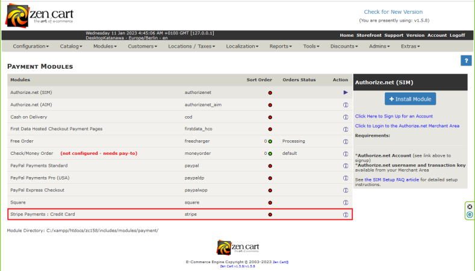
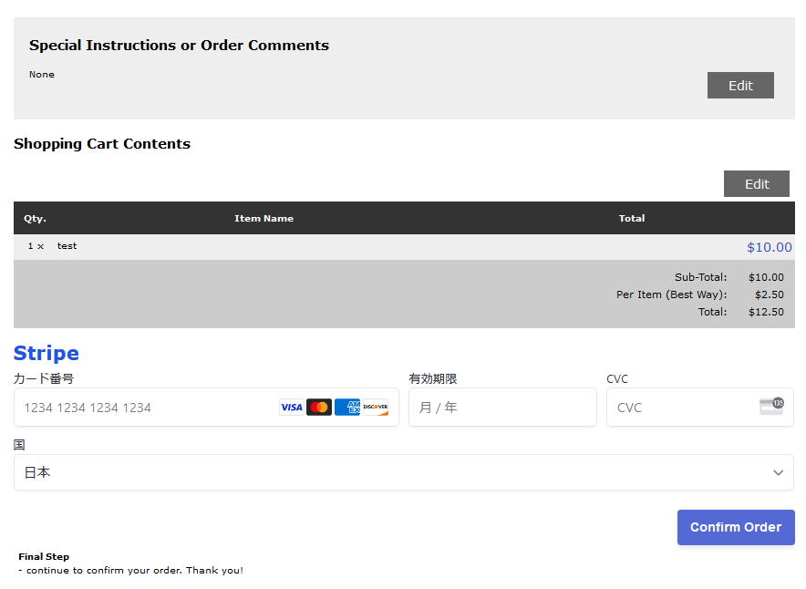
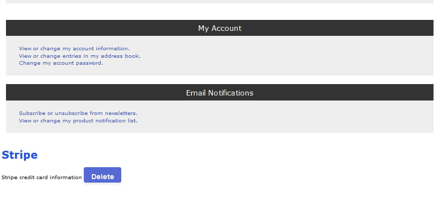

Stripe Secure Payment Module for Zen Cart v3.0.0
Introduction
This Zen Cart payment module is used for Stripe secure payment transactions. You have to sign up and contract with the Stripe company to receive the publishable and secret keys required for the module's operation. Stripe supports processing payments in 135+ currencies.
Currently supporting Zen Cart version 1.5.8 and later and PHP 8.0.0 and later. Also validated with One-Page Checkout v2.5.5 and the ZCA Bootstrap template v3.7.8.
Notes:
- We do not insure for any monetary damages caused by this module, therefore you must check the module using the Test-mode operation and confirm that it is operating normally even after Testing!
- Stripe's system multiplies currencies with 2 decimal places, such as USD and EUR, by 100 before sending them to Stripe's servers. The Stripe server converts the received number to 1/100 and manages it. Japanese yen has no decimal point, so the number is sent to Stripe servers as-is. This module automatically converts for each currency, but test it with all the currencies you use before using it.
- If you open the Stripe dashboard => Payments => All page, you will find many incomplete payments. Because stripe server creates pi_xxxxxxxxxxxxxxx every time when the Zen cart check out confirmation page is displayed. and Stripe server creates two pi_xxxxxxxxxxxxxxx for each payment. The cause is due to the specification of stripe server and Zencart.
- If your site uses One-Page Checkout (OPC), you must add
stripe to the comma-separated list of payment methods requiring confirmation (Configuration :: One-Page Checkout Settings :: Payment Methods Requiring Confirmation).
Installing and Upgrading
Upgrading from a Version Prior to v3.0.0
v3.0.0 and later of the payment module is very different than versions prior to v3.0.0. There are no more core-file overwrites or template-file modifications required (or wanted).
When upgrading to v3.0.0 and later from a version prior to v3.0.0, you must first remove various files and edits required by those previous versions. See this GitHub wiki article for details.
IMPORTANT: After changing the API key or the payment-module's test-mode status, you must erase all existing records in the payment-module's database table:
- Navigate to the admin's Tools :: Install SQL Patches tool.
- Enter the following into the text-box and then press the "Send" button:
TRUNCATE stripe;
Install the Payment Module
To perform an initial installation of the payment module:
- Unzip the module's distribution zip-file.
- Rename the YOUR_TEMPLATE directory to match the name of your currently active template:
/includes/template/YOUR_TEMPLATE.
- Copy all files and sub-directories from the distribution's
/includes directory to your site's /includes directory.
- /includes/classes/ajax/zcAjaxStripe.php
- /includes/classes/observers/auto.stripe.php
- /includes/extra_datafiles/stripe_database_names.php
- /includes/languages/english/extra_definitions/lang.stripe_extra_definitions.php
- /includes/languages/english/modules/payment/lang.stripe.php
- /includes/languages/french/extra_definitions/lang.stripe_extra_definitions.php
- /includes/languages/french/modules/payment/lang.stripe.php
- /includes/languages/german/extra_definitions/lang.stripe_extra_definitions.php
- /includes/languages/german/modules/payment/lang.stripe.php
- /includes/languages/japanese/extra_definitions/lang.stripe_extra_definitions.php
- /includes/languages/japanese/modules/payment/lang.stripe.php
- /includes/modules/pages/account/jscript_stripe_account_form.php
- /includes/modules/pages/checkout_confirmation/jscript_stripe_checkout_confirmation.php
- /includes/modules/pages/checkout_one/jscript_stripe_checkout_one.php
- /includes/modules/pages/checkout_one_confirmation/jscript_stripe_checkout_one_confirmation.php
- /includes/modules/pages/checkout_payment/jscript_stripe_checkout_payment.php
- /includes/modules/payment/stripepay/vendor/*.*
- /includes/modules/payment/stripepay/create.php
- /includes/modules/payment/stripe.php
- /includes/templates/YOUR_TEMPLATE/css/stylesheet_stripe.css
- /includes/checkout.js
- Navigate to the admin's Modules :: Payment. You will see the Stripe Payments : Credit Card module added. Select that module and
Install it.

- Note: Test mode is the default value when this module is installed. After the test, don't forget to set the test mode to 'false'. Do not disclose the secret key provided by Stripe.
Upgrading the Payment Module
Follow steps A through C in the previous (installation) section.
Test on the Storefront (Test Mode)
Use these steps to make sure that you have installed and configured the payment module correctly:
- Place one or more items into your cart and start the checkout process.
- Choose the Stripe Payment : Credit Card payment module and continue to the checkout confirmation step.
- The Stripe card-entry form will show as below. If the form does not appear, you might have entered an incorrect API key.

- Enter test VISA credit card number 4242 4242 4242 4242, an Expiration Date that is in the future, a random 3-digit number in the CVC and the Zip Code (if requested). Press the "Confirm Order" button.
- Go to your Stripe dashboard. and click the Payments and Succeeded button. Check the information's total amount, customer name and e-mail address.
- Confirm the email address and order total on the Zen cart admin's Customers :: Orders page. Compare zen cart total amount, customer name and e-mail address with the Stripe information.
Remove the Payment Module
Navigate to the admin's Modules :: Payment, select the Stripe Payments : Credit Card module and click its Uninstall button.
Remove Customers' Stripe Records
Customer's credit card information is encrypted and registered in the database, but can be deleted at the customer's discretion. Customer can delete it with the Stripe credit card information deletion button in "My Account" page. After deletion, this indication will no longer be displayed.
